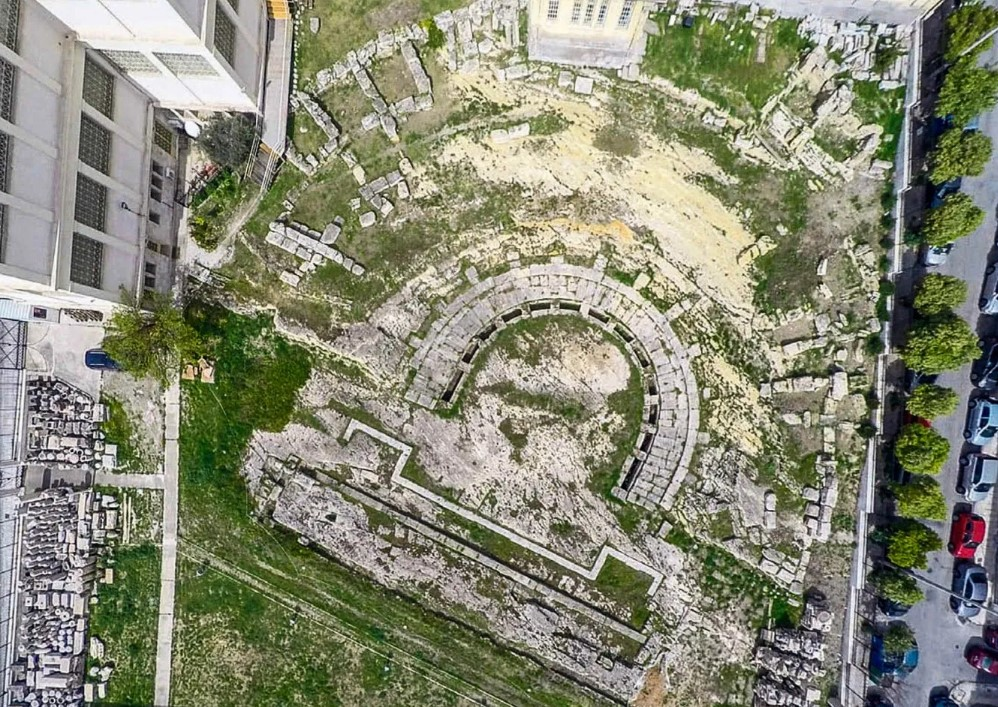

Το μνημείο διαθέτει την τριμερή χαρακτηριστική οργάνωση ενός ελληνιστικού θεάτρου, δηλαδή κοίλο, ορχήστρα και σκηνικό οικοδόμημα. Ο προσανατολισμός του είναι νοτιοανατολικός και για την θεμελίωσή του χρησιμοποιήθηκε ο γνωστός υποκίτρινος Πειραϊκός Ακτίτης λίθος. Το κοίλον του ήταν εν μέρει θεμελιωμένο στο φυσικό βράχο. Στο ανώτερο τμήμα του, όπου δεν υπήρχε ο φυσικός βράχος, τα εδώλια του κοίλου εδράζονταν σε τεχνητή λίθινη θεμελίωση, η οποία καλυπτόταν με χώμα. Δημιουργούνταν δηλαδή ένα είδος τεχνητής επίχωσης για τη θεμελίωση του ανώτερου τμήματος του κοίλου. Η διάμετρός του κοίλου είναι 66,5 μ. και αποτελείται από 13 κερκίδες και 14 κλίμακες. Το κατώτερο επίπεδο του κοίλου πιθανώς χρησίμευε ως διάδρομος[3], ενώ το ακριβώς επόμενο τμήμα του πρέπει να αποτελούσε τη βάση της πρώτης σειράς των εδωλίων. Ανάμεσα στο κοίλο και την ορχήστρα διαμορφωνόταν λίθινος αγωγός για την απορροή των υδάτων. Η ορχήστρα είναι πεταλόσχημη, λαξευμένη στο βράχο, με διάμετρο στη βόρεια πλευρά 23,4 μ. ενώ στην ανατολική 16,34 μ. Το σκηνικό οικοδόμημα σώζεται στο επίπεδο θεμελίωσης, δηλαδή πολύ χαμηλά στο έδαφος, έχοντας ορθογώνια κάτοψη μήκους 36 μ. και πλάτους 4,80 μ. Στον πρόσθιο τοίχο του θα υπήρχαν θύρες για τη σύνδεση της σκηνής με τον εσωτερικό χώρο του προσκηνίου. Το προσκήνιο πλαισιώνεται από δύο παρασκήνια, ενώ δεν διακρίνονται ίχνη για θύρες. Ανάμεσα στο κοίλο και στα παρασκήνια διαμορφώνονταν οι δύο πάροδοι προς την ορχήστρα.
